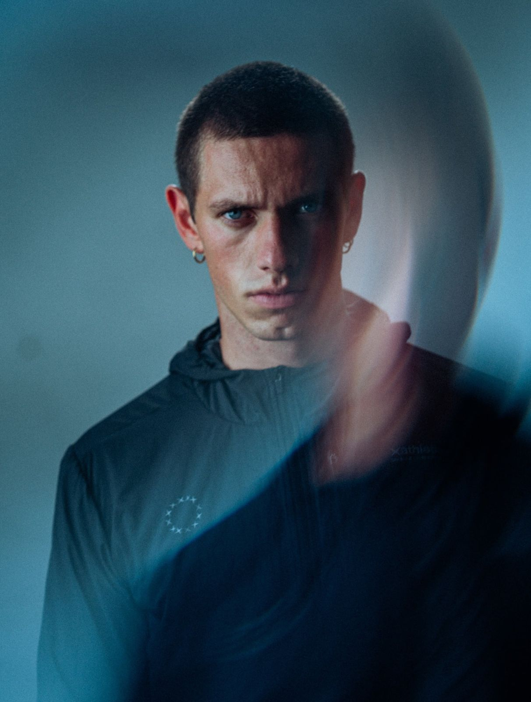
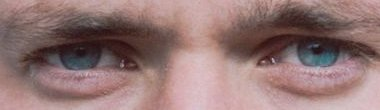
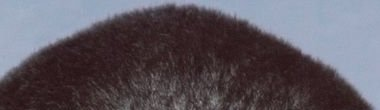
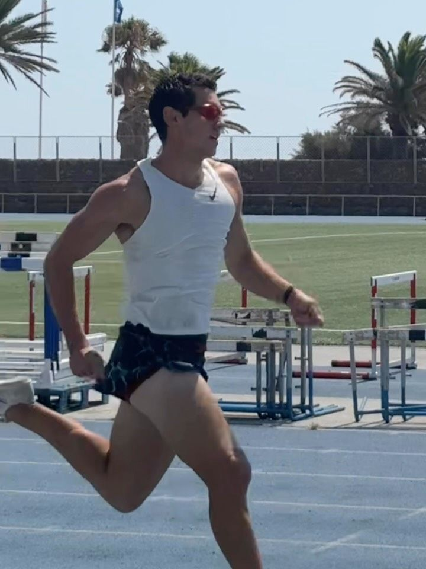

Running Emotion
Publicidad en Instagram, julio de 2026
2 vídeos, 1 foto

Modelo y atleta. Más de diez años corriendo 400 m vallas.
Medidas en centímetros, sobre una cinta de 0 a 200 cm. Datos de Blow Models.


Campañas y catálogos de su book en Blow Models. Pulsa una foto para verla a pantalla completa.

Publicidad en Instagram, julio de 2026
Dolomitas, julio de 2026 · Fotos del Instagram de Dario
Con Javi Antón · Estilismo: Sara Arroyo · © 2025 Sopa de ganso Estudio
Con Eren Saračević, abril de 2026
Calcetines técnicos de running, Barcelona
Estudio y calle, en color y en blanco y negro.
Fotos de referencia para casting.
Dario trabaja a través de Blow Models. Escribe a la agencia para disponibilidad, castings y presupuestos.
contact@blowmodels.com